I'm a Senior Research Scientist working on Apple's Foundational Diffusion Models. My current focus is building video & world generation models, and post-training agents that use them as tools to align generations with human preference. I'm a core contributor to Image Playground and Genmoji in Apple Intelligence.
Previously, I was a Research Scientist at FAIR Labs (Meta), working on scaling multi-modal LLMs for vision, language and 3D representations. My representative works include PyTorch3D and uCO3D, which have been open-sourced. Prior to that, I was an Applied Scientist at Amazon's M5 Multimodal team building VLMs for search relevance — see my publications on Amazon Science.
My research has been recognized with the JVCI 2021 Best Paper Award on interpretable CNNs, the IROS 2019 Best Paper Finalist on human–robot adversarial games (featured as a USC headline), and the CCBR 2016 Best Student Paper Award. I was fortunate to work with C.-C. Jay Kuo and Stefanos Nikolaidis at USC, Stan Z. Li and Shengcai Liao at Chinese Academy of Sciences (NLPR), and David Novotny, Justin Johnson, Xinlei Chen at FAIR (Meta).
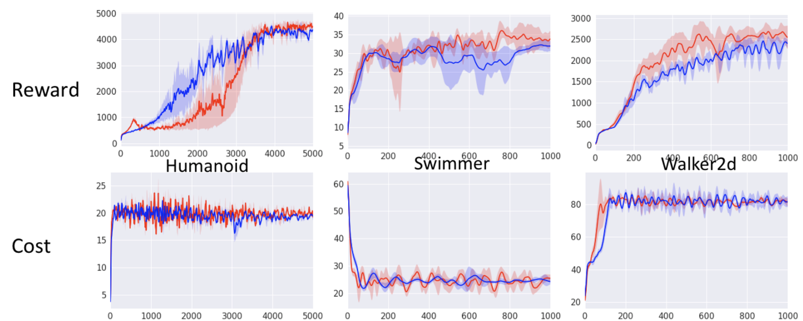
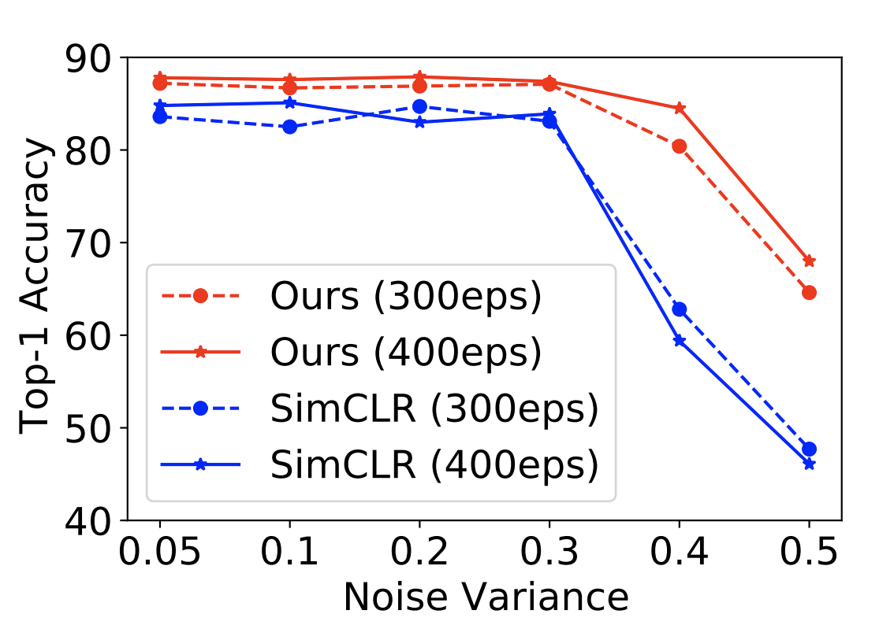
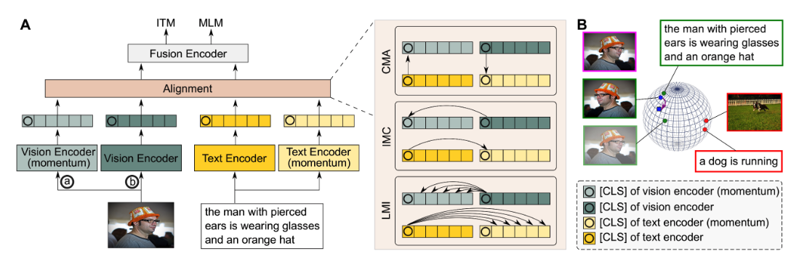
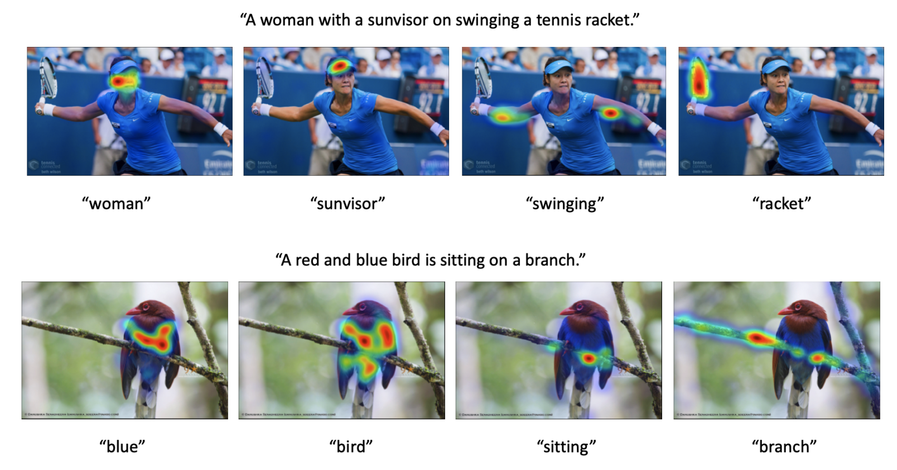
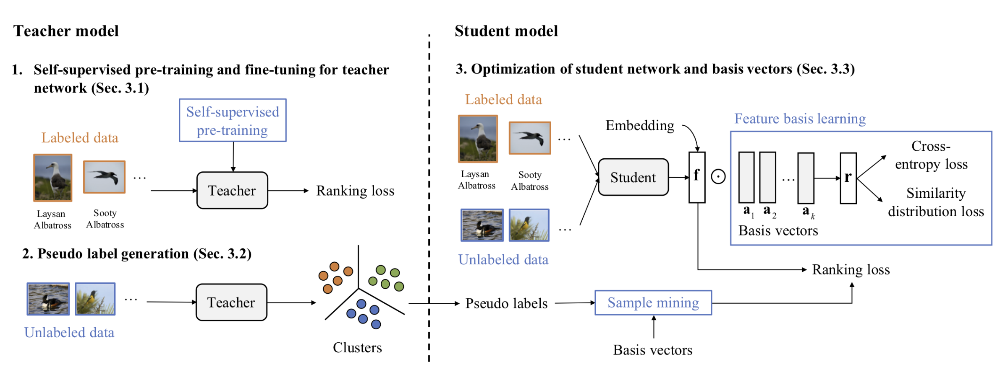
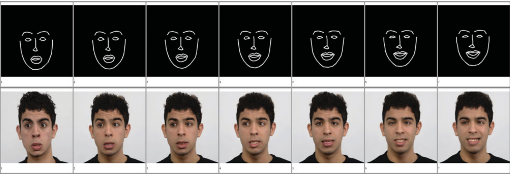
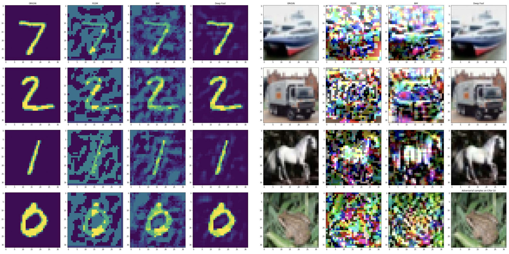
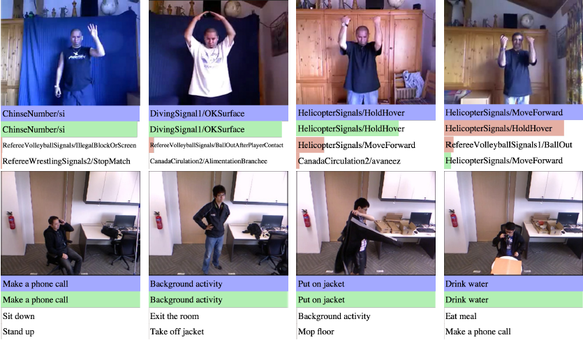
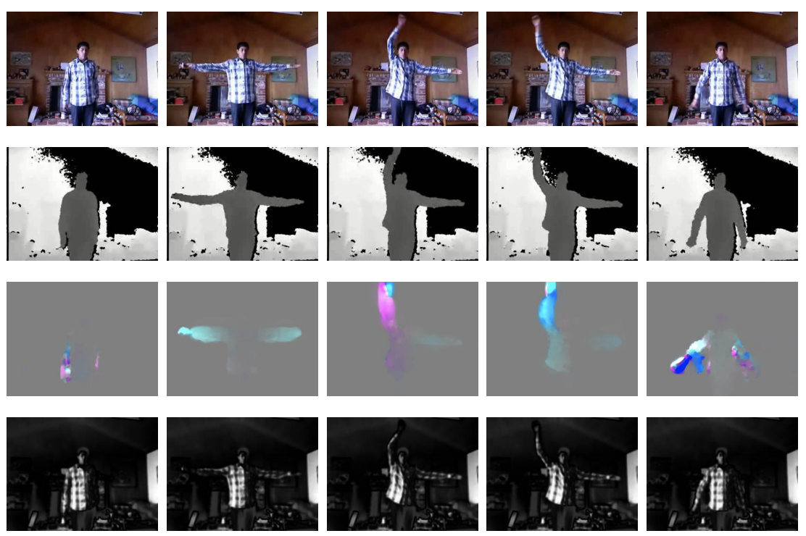
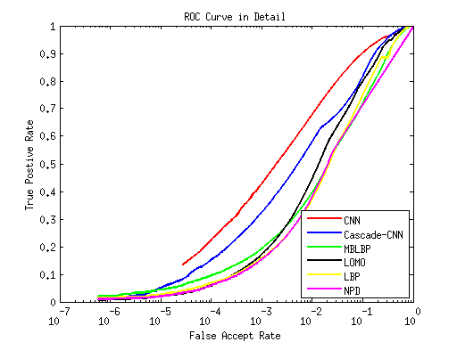
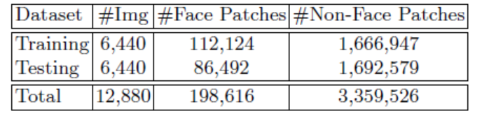
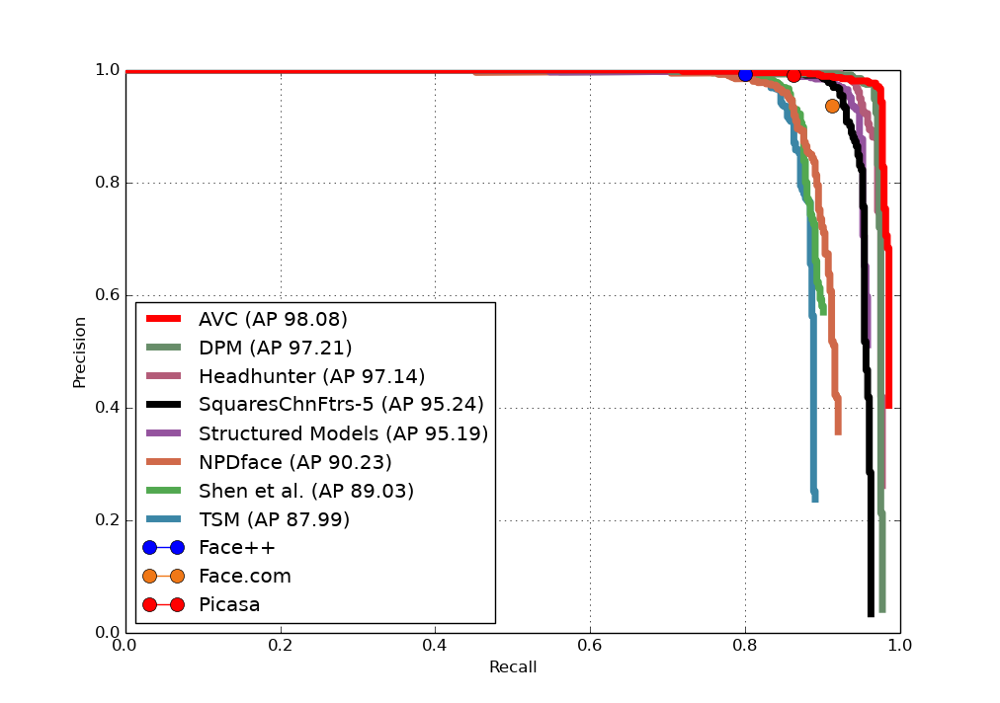
jli.duan@gmail.com © Last updated June 2026
{kind=link}
{kind=link}
{kind=link}
{kind=link}